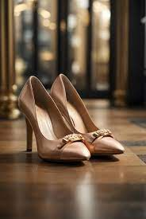
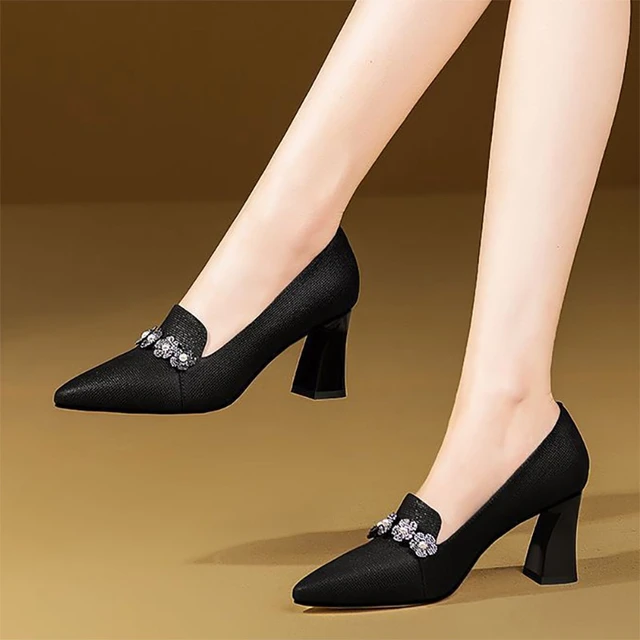

GIVENCHY
Catalogo
Vestidos de Fiesta
Vestidos de Gala
Trajes de Gala
Vestidos de Coctel
Calzado de Caballero
Calzado de Dama
Calzado para Dama

-Tacones de 7cm de altura
-Colores disponibles
-Tallas diponibles
-Diseño con diamantes dorados en el frente

-Tacones cuadrados de 5cm de altura
-Colores disponibles
-Tallas diponibles
-Diseño con diamantes plateado en el frente

-Mocacines con tacones cuadrados
de 3cm de altura
-Colores disponibles
-Tallas diponibles
-Diseño de la marca en el frente
del mismo color

-Tacones de 7cm de altura
-Colores disponibles
-Tallas diponibles
-Diseño de moño plateado en el frente
-Con abertura y broches para ajustar

-Tacones de 4cm de altura
-Colores disponibles
-Tallas diponibles
-Lisos sin diseño y abertura tipo mocasines

-Tacones de 9cm de altura
-Colores disponibles
-Tallas diponibles
-Diseño de tiras cruzadas en el frente
y broches para ajustar

-Mocacines con tacones cuadrados
de 4cm de altura
-Colores disponibles
-Tallas diponibles
-Diseño del mismo color en el frente
-En en frente con diferentes materiales

-Tacones de 7cm de altura
-Colores disponibles
-Tallas diponibles
-Diseño de tira plateada en la parte de atras